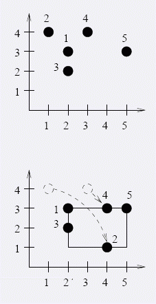

第一行包含一个数n，表示石头的数量
接下来n行分别描述n个石头的初始坐标和重量xi,yi,mi。
（0<=xi,yi<=1000000000，1<=mi<=2000
（2<=n<=1000000）
Blue Mary是一个有名的石头收藏家。迄今为止，他把他的藏品全部放在他的宫殿的地窖中。现在，他想将他
的藏品陈列在他的花园中。皇家花园是一个边长为1000000000单位的平行于坐标轴的正方形。对于每个石头，Blue
Mary都有一个他想放置的坐标，然后将他告诉他的属下。不幸的是，他忘了告诉他们坐标的顺序（比如无法分辨(
x,y)和(y,x)）。属下们，就自己决定了每个石头的具体位置。为了保护他的藏品，Blue Mary决定建造一个篱笆来
保护他们。为了美学的需要，篱笆也被设计为平行于坐标轴的矩形。如果花园的布局知道了，那么就可以知道最短
长度的篱笆的布局。他的属下们需要变换石头的坐标使得篱笆的长度最少。每个石头只能从(x,y)变换为(y,x)，由
于每个石头的重量不一样。属下们希望他们移动的石头的重量和最少。
5
2 3 400
1 4 100
2 2 655
3 4 100
5 3 277
10 200
2018.4.17修改题面，不需要输出方案了.未重测！